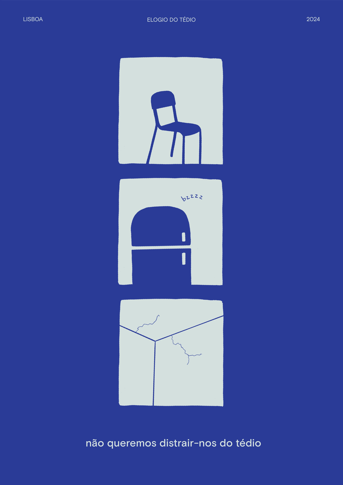

→ POSTER

Summary poster of the Elogio do Tédio manifesto, A2 format.
→ MANIFESTO (English version)
To those who hymned eternal movement, mad
eagerness and insatiable pursuit of empty success.
To those who indulge in endless cycles of actions and diversions.
To the dehumanizing conception of time as productive,
to the imperative of speed,
to the idea of optimizing time.
To those who erroneously attribute productivity to humans and not machines:
stop priding yourself on your creation.
The world at large glorifies extreme perfection,
fatigue, feverish restlessness and repetitive
tirelessness. One must be fast, one must work hard,
one must be motivated and aim for perfection.
But the flipside of musts and obligations,
is that their results do not belong to us.
Our expectations are not our own.
Our success is not our own.
Our feelings are not our own.
Our lives are not our own.
But
our exhaustion is our own.
Our depression is our own.
Our illnesses are our own.
Our failures are our own.
We are not grumbling, we are not whining.
We are claiming for our rights to pause.
We declare a new paradigm:
the paradigm of boredom.
The magnificence of the world will be enriched
with a new quiet beauty: the beauty of not doing,
of just inhabiting time, for inhabiting time also means inhabiting the body,
making peace with oneself.
We’re tired of always filling in the blanks:
not every silence needs a question,
not every question needs an answer,
not every answer needs an explanation.
We need time,
we need space,
we need void.
We need to experience time as quality,
not quantity.
We need to be aimlessly bored
and not feel guilty about it.
We want to be fast, we want to be slow.
We want to be active, we want to stay still.
We want to try everything this world has to offer,
we want to sit and do nothing.
We want to learn how to make mistakes,
we want to ungrow.
We want to find out our imperfections, explore our ugliness in depth.
We don’t want to be afraid of it, but draw strength from it.
No work resulting from hectic research
and precipitous completion can be a masterpiece,
because in the boredom lies the brilliance.
We don’t want to distract ourselves from boredom,
for in the lack of meaning we want to find new epiphanies.
The aimlessness of boredom opens endless doors.
To children of hustle culture who, exhausted by useful activities,
need time to regain their bodies and wills.
To those who, with frail intrepidity, ask for space and time.
To those who feebly yearn to feel human again,
we hereby present a toolkit for boredom.
1. Stop all activities.
2. Sit on an uncomfortable chair.
3. Stare at a blank wall.
4. Forget your phone on purpose.
5. Let your mind drift.
6. Resist the urge to check the hour;
if you feel like you’re wasting time,
than you’re doing it correctly.
7. Don’t worry, you’re not missing
out on anything fun. Or maybe you are.
But who cares?
8. Be in tune with your body. Feel the tingle
in your feet. Annoying, isn’t it?
9. If you feel stomach cramps, first eat then start
again from 1.
10. You might want to whistle, sing, fill
the void. Don’t. Enjoy the refrigerator buzz.
11. Give in to the need of tapping your fingers
or twirling your hair.
12. Start noticing details: the cracks
on the wall are starting to look interesting,
right?
13. Don’t judge your own emotions: crying,
screaming and laughing are allowed.
14. Stop when the uncomfortable becomes
comfortable.